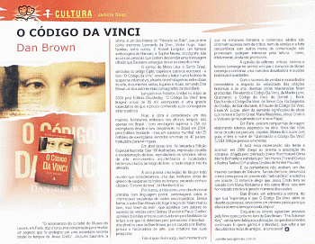
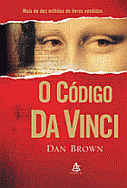
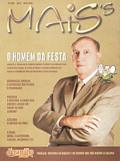

“O
assassinato do curador do Museu do Louvre,
em Paris, traz à tona uma conspiração
para revelar um segredo que foi protegido
por uma sociedade secreta desde os tempos
de Jesus Cristo”.
Jacques Saunière, a vítima,
é um dos líderes do “Priorado
de Sião”, que já teve
como membros Leonardo da Vinci, Victor Hugo,
Isaac Newton, entre outros. E Robert Langdon,
um famoso simbologista de Harvard, e Sophie
Neveu, criptógrafa, são as únicas
pessoas que podem desvendar uma mensagem cifrada
que Saunière consegue deixar na cena
do crime.
O sorriso de Mona Lisa, o Santo Graal, símbolos
do antigo Egito, capelas e castelos europeus
- o livro “O Código da Vinci”
envolve o leitor numa história de suspense
informativo, através de estratagemas
entre obras de arte, documentos, seitas, lugares
e rituais, tornando Dan Brown um dos autores
mais consagrados da atualidade.
Lançado nos Estados Unidos no início
de 2003 pela Editora Doubleday, “O Código
Da Vinci” teve tiragem inicial de 85
mil exemplares e uma grande expectativa de
que o pouco conhecido autor conseguisse atrair
o público.
Hoje, a obra é considerada um dos maiores
fenômenos editoriais dos últimos
tempos, não apenas no Brasil - com
vendagem superior a 750 mil exemplares desde
o seu lançamento no Brasil em 2004,
pela Editora Sextante - mas um sucesso mundial:
são 25 milhões de exemplares
vendidos em mais de 40 países, traduzidos
para 44 línguas.
Em abril desse ano, foi lançada a Edição
Especial Ilustrada. São 160 ilustrações,
impressão colorida e encadernação
de luxo, reproduzindo os símbolos,
obras de arte, monumentos arquitetônicos
e localidades históricas citados ao
longo do livro – o texto original não
foi alterado.
A obra possui uma legião de fãs
por todo mundo que consideram-na uma das melhores
obras do gênero de suspense de todos
os tempos – pecando contra o clássico
“O nome da rosa”, de Humberto
Eco.
Por outros, é tida como uma obra ficcional
primária com linguagem pobre, personagens
rasos e interminável seqüência
de dados enciclopédicos. Dessa forma,
o autor Dan Brown não foge à
regra do “falem mal ou bem, mas falem
de mim”, que acontece com autores de
sucesso de vendas como Sidney Sheldon e Paulo
Coelho: opiniões divididas entre os
que os adoram pela facilidade da leitura e
os que os detestam pelo primarismo intelectual
- discutível no caso de Dan Brown,
pois é casado com Blythe, pintora e
historiadora de arte, que colabora nas suas
pesquisas.
Fato é que o livro surgiu num momento
em que os romances literários e comerciais
adultos não obtinham sucesso nem de
crítica, nem de vendas e a forte concorrência
com outros meios de comunicação
não promoviam qualquer interesse pela
leitura – como, infelizmente, ainda
não promovem.
A opinião de editores, críticos,
livreiros e leitores converge no sentido em
que o romance de Brown conseguiu combinar
uma narrativa desafiadora e alusões
históricas inquietantes.
Com o sucesso de vendas e exacerbados comentários
a respeito da veracidade das citações
históricas e de arte, diversas obras
relacionadas foram produzidas. Revelando o
Código Da Vinci, de Martin Lunn, Quebrando
o Código da Vinci, de Darrell L. Bock,
Decifrando o Código Da Vinci, de Simon
Cox, Os Segredos do Código, de Dan
Burstein, A Fraude do Código Da Vinci,
Erwin W. Lutzer, além do aumento significativo
de obras cujo tema é o Santo Graal,
Maria Madalena, Jesus Cristo e o Vaticano
(principalmente com o novo Papa).
Em Paris, existem companhias de viagem elaborando
roteiros inspirados na obra. Uma das rotas
inclui circuito por parques, capelas, Museu
do Louvre com guia, e tem o nome de “Quebrando
o Código Da Vinci” (US$1.500
por pessoa, em média).
E toda essa repercussão não
tende a acalmar: em 2006 chega ao cinema a
adaptação do romance, dirigida
pelo premiado diretor Ron Howard (Uma Mente
Brilhante) e estrelada por Tom Hanks (Forrest
Gump) e Audrey Tautou (O Fabuloso Destino
de Amélie Poulain).
E os comentários não acabam:
um dos maiores cardeais do Vaticano, Tarcisio
Bertone, denunciou o livro como prova de preconceito
“anti-católico” e solicitou
um boicote. O romance alega que Jesus Cristo
teria se casado com Maria Madalena e tido
vários filhos – isso tem horrorizado
cristãos e gerado inúmeras discussões.
Dan Brown, em entrevista a editora, diz que
sua “esperança é que O
Código Da Vinci, além de divertir
as pessoas, sirva como um primeiro passo para
que elas explorem o tema por conta própria”.
Enquanto os leitores aguardam ansiosos pelo
filme e pelo próximo livro de Dan Brown
- “The Solomon Key” - ainda sem
data para publicação, os questionamentos
continuam. E quem ganha é a literatura,
que volta a ser discutida nas rodas de amigos...e
conclaves!